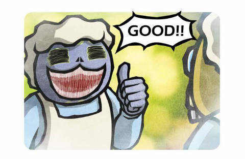

3. 테스트
다운로드, 파일 수정이 끝났으니, 이제 확인를 해 봅니다.
명령 프롬포트를 켭니다.
C:\php8\Php –v를 입력합니다.
이렇게 프로그램의 버전 정보와 저작권 정보가 나오면 성공입니다.
PHP를 사용하기 위해서는 우선 PHP 파일을 다운 받아야 합니다.
PHP 다운 링크다운로드 페이지에 직행으로 들어가 집니다.
위에 체크된 것만 받도록 합니다.
이름을 간단하게 바꾼 뒤 C드라이브로 이동시켜 줍니다.
이걸로 다운로드가 완료되었습니다.
이제 C로 옮겼으니 파일을 수정해야 합니다.
우선 php.ini-production을 찾습니다.
php.ini로 바꿔줍니다.
파일을 수정해야하니, VS Code로 열어줍니다.
이 파일 하나만 수정하면 됩니다.
770줄 쯤에 있는 extension_dir의 주석을 지우고 따음표 안에 C:/php8/ext를 입력합니다.
만약 파일 이름을 바꾸셨다면, php8대신 본인이 정한 파일의 이름을 입력하셔야 합니다.
이번에는 956줄 즈음 있는 extension을 extension=php_openssl.dll=php_openssl.dll로 바꿉니다.
마지막으로, 198줄애 있는 short_open_tag를 on으로 바꾸어 줍니다.
이걸로 파일 수정은 모두 끝이 납니다.
다운로드, 파일 수정이 끝났으니, 이제 확인를 해 봅니다.
명령 프롬포트를 켭니다.
C:\php8\Php –v를 입력합니다.
이렇게 프로그램의 버전 정보와 저작권 정보가 나오면 성공입니다.